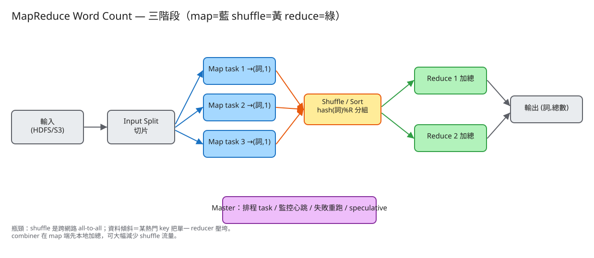

D 串流計算/儲存分發 建議 45 分鐘 Design MapReduce / Batch Processing
map(k,v) → list(k2,v2) 與 reduce(k2, list(v2)) → list(v3)；框架負責切片、排程、平行、分組、容錯。| 指標 | 假設 | 推算 |
|---|---|---|
| 輸入資料量 | 1 PB log | 需切成大量 split 平行處理 |
| split 數（= map task 數） | 每片 128 MB（HDFS block） | 1 PB / 128 MB ≈ 800 萬個 split / map task |
| map 平行度 | 叢集 1 萬核心，每核一次一個 map | 800 萬 / 1 萬 ≈ 800 波，每波數十秒 |
| reduce 數 (R) | 人為設定，常數百~數千 | R 決定輸出檔數與並行度；太少→傾斜，太多→小檔多 |
| shuffle 搬運量 | map 輸出 ≈ 輸入同量級 | 近 1 PB 要跨網路 all-to-all → 主要成本 |
# 使用者只需實作兩個函式（word count 為例）
map(documentName, lineText):
for word in tokenize(lineText):
emit(word, 1) # 中間對 (k2, v2)
reduce(word, listOfCounts):
emit(word, sum(listOfCounts)) # 最終對 (k2, v3)
# 可選：combiner（map 端本地預聚合，介面同 reduce）
combine(word, listOfCounts):
emit(word, sum(listOfCounts))
# 可選：partitioner（決定 k2 去哪個 reducer，預設 hash 取模）
partition(key, R) = hash(key) % R
# 提交 job（框架層）
submitJob(inputPath, outputPath, mapFn, reduceFn,
numReducers=R, combiner=null)
POST /api/job { text, mappers, reducers, combiner } 跑一輪、GET /api/state 取回三階段中間產物。輸入（HDFS/S3）
大檔 → 由框架依 block 切成 input split（如 128MB/片）
每個 split → 一個 map task
中間資料（map 輸出，落在 mapper 本地磁碟）
(k2, v2) 對，例：("fox", 1) ("the", 1) ...
依 partition = hash(k2) % R 分桶，桶內依 k2 排序
shuffle 後（reducer 端）
每個 reducer 收到「分給它的所有 k2」+「各 k2 的 v2 清單」
例：reducer#0 收到 { "fox":[1,1,1], "the":[1,1,1,1] }
輸出（HDFS/S3）
每個 reducer 寫一個輸出檔 part-r-00000, part-r-00001 ...
(k2, v3) 對，例：("fox", 3) ("the", 4)hash(key) % R 這個確定性函式保證：不管哪個 mapper 產生的 "fox"，算出的 partition 都一樣。
✏️ 用 Excalidraw 開啟編輯（diagram.excalidraw） 輸入(HDFS/S3)
│ 切片
▼
┌─split─┬─split─┬─split─┐
│ Map 1 │ Map 2 │ Map 3 │ 每片一個 map task →(詞,1)（可選 combiner 本地預聚合）
└───┬───┴───┬───┴───┬───┘
└───────┼───────┘
▼ Shuffle / Sort：依 hash(詞)%R 分組，同詞匯到同 reducer（跨網路）
┌───────┴───────┐
▼ ▼
┌Reduce 1┐ ┌Reduce 2┐ 每個 reducer 把同詞 value 加總
└───┬────┘ └───┬────┘
└───────┬───────┘
▼
輸出(HDFS/S3) part-r-*
Master：切 task、指派 worker、監控心跳、失敗重跑、落後者 speculative executionpartition = hash(key) % R。決定每個 key 去哪個 reducer，並保證同 key 同 reducer。自訂 partitioner 可處理特殊分佈（如範圍分區做全域排序）。
在 map 端先把同 key 的 value 本地加總（介面同 reduce），例如一個 mapper 內 ("the",1)×100 先變成 ("the",100)。大幅減少 shuffle 要搬的資料量。前提是聚合函式可結合（sum/max 可，avg 要拆成 sum+count）。
Master 盡量把 map task 排到「該 split 的副本所在的節點」上，讓讀取走本地磁碟而非網路，省下昂貴的跨機頻寬。
worker 掛了 → master 偵測心跳逾時 → 把該 worker 未完成（甚至已完成的 map，因中間檔在本地）的 task 重新指派給別的 worker。因為 map/reduce 是確定性、無副作用的純函式，重跑結果一致。
某台機器特別慢（硬碟壞軌、負載高）會拖垮整個 job（要等最慢的 reducer）。master 對這種落後 task 額外起一個備援副本並行跑，誰先完成就用誰、砍掉另一個。
| 瓶頸 | 成因 | 對策 |
|---|---|---|
| Shuffle（頭號瓶頸） | map 輸出近輸入量級，要跨網路 all-to-all 搬 + 排序 | combiner 本地預聚合、壓縮中間資料、提高網路、減少中間資料量 |
| 資料傾斜（data skew） | 某個熱門 key（如 "the"、null、熱門用戶）value 暴量 → 單一 reducer 累死，其他閒置 | 加鹽打散（salting）、自訂 partitioner、傾斜 key 二階段聚合、combiner 先壓 |
| 小檔問題 | 輸入是海量小檔 → 每個小檔一個 map task，排程開銷>運算 | 合併小檔（CombineFileInputFormat）、預先打包成大檔 |
| 落後者拖尾 | 最慢的 task 決定總時長 | speculative execution 備援副本 |
| 反覆落地磁碟 | 每個 job 中間結果寫 HDFS，迭代慢 | 改用 Spark：DAG + 記憶體中間結果 |
本題 demo 著重於 MapReduce 三階段的資料流與 partition 規則（也是面試真正的考點），可實際用 PHP 內建伺服器跑起來，把每一階段的中間產物攤開來看：
src/Splitter.php 把輸入文字依行切成 N 個 input split（餵給 N 個 map task）。src/Mapper.php map：每行斷詞，每個詞輸出 (詞,1)；可選 combiner 本地預聚合。src/Shuffler.php shuffle/sort：依 partition = hash(詞) % R 分組，同詞匯到同 reducer。src/Reducer.php reduce：每個詞把 value 清單加總。src/Job.php master：模擬多個 map/reduce task 平行，串起三階段並保留所有中間產物（flock 落地）。public/index.php 路由 + 三階段視覺化測試頁。# 啟動
cd demo
php -S localhost:8053 -t public
# 瀏覽器開 http://localhost:8053 貼一段文字 → 跑 job → 看 map 輸出 / shuffle 分組 / reduce 結果三階段hash(詞)%R partition、同詞匯同 reducer）→ reduce（加總）的三階段邏輯與中間產物為真實可執行，要擴成分散式只需把 task 換成跨機 worker、shuffle 換成跨網路拉取，計算邏輯一字不用改。